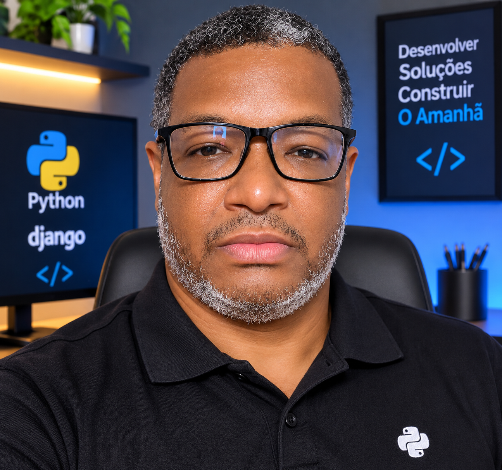

HTML5
Estruturação de páginas web.
Apaixonado por tecnologia, programação e desenvolvimento web. Transformando ideias em soluções digitais.
Conheça minha história
Meu nome é André Luiz de Souza, tenho 49 anos e sou natural de Nova Lima, Minas Gerais. Sou formado em Análise e Desenvolvimento de Sistemas e Desenvolvimento de Aplicativos Móveis, além de possuir pós-graduação em Desenvolvimento de Sistemas com Python.
Sou apaixonado por tecnologia, programação e desenvolvimento web. Estou sempre em busca de novos conhecimentos, explorando linguagens de programação, ferramentas e frameworks para aprimorar minhas habilidades.
Atualmente, estou desenvolvendo meu projeto pessoal, o ListaFácil, com previsão de lançamento ainda este ano. A plataforma tem como objetivo ajudar as pessoas a organizarem suas listas de compras, tarefas e atividades do dia a dia.
Acredito que a tecnologia é uma poderosa ferramenta para transformar ideias em soluções que facilitam a vida das pessoas. Por isso, sigo dedicado ao aprendizado contínuo e à construção da minha trajetória como desenvolvedor de software.
Tecnologias e ferramentas que fazem parte da minha jornada no desenvolvimento de software.
Estruturação de páginas web.
Estilização e layouts responsivos.
Interatividade e funcionalidades web.
Lógica e desenvolvimento de aplicações.
Desenvolvimento web com Python.
Desenvolvimento de interfaces.
Aplicações web modernas.
Versionamento e gerenciamento de código.
Banco de dados relacional.
Alguns projetos que representam minha jornada no desenvolvimento de software.
Plataforma para organizar listas de compras, tarefas e atividades do dia a dia de maneira simples e prática.
Biblioteca Python com ferramentas e funcionalidades utilitárias para facilitar tarefas comuns no desenvolvimento.
Estudar HTML, CSS e JavaScript.
Concluir e publicar o ListaFácil.
Participar de hackathons e competições de programação.
Conquistar meus primeiros trabalhos como freelancer.
Construir um portfólio profissional.
Publicar meu primeiro artigo sobre programação.
Estou aberto a novas conexões, oportunidades e experiências.
Meu LinkedIn Meu Whatsapp